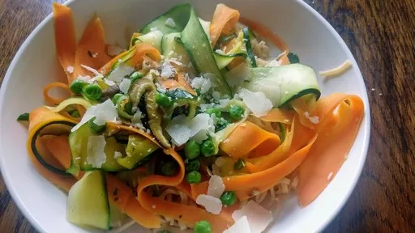

Vegetable and egg noodle ribbons

Serve this elegant, colourful dish with a tossed green salad as a light lunch. Use fresh pasta noodles for optimum speed and maximum flavour.
Servings: 4
Total: 10 mins
Ingredients
- 1 large carrot, peeled
- 2 courgettes
- 50 g butter
- 15 ml olive oil
- 6 fresh shiitake mushrooms, finely sliced
- 50 g frozen peas, thawed
- 350 g fresh broad egg ribbon noodles
- 2 tsp chopped mixed herbs, such as marjoram, chives and basil
- salt and ground black pepper
- 25 g Parmesan cheese, to serve
Instructions
- Using a vegetable peeler, carefully slice thin strips from the
carrot1 large
and the courgettes2
.
- Heat the
butter50 g
with the olive oil15 ml
in a large frying pan. Stir in the carrot1 large
and shiitake mushrooms6
; fry for 2 minutes. Add the courgettes2
and peas50 g
and stir-fry until the courgettes2
are cooked, but still crisp. Season with salt and pepper.
- Meanwhile, cook the
noodles350 g
in a large pan of boiling water until just tender. Drain the noodles350 g
and tip them into a bowl. Add the vegetables and toss gently to mix.
- Sprinkly over the fresh herbs and season to taste. If using the
Parmesan25 g
, grate or shave it over the top. Toss lightly and serve.
-
kcal
500
-
fat
21 g
-
saturates
9.1 g
-
carbs
68.1 g
-
sugar
5 g
-
fibre
4.9 g
-
protein
13.9 g
-
salt
0.24 g
The Half Hour Cook
Short Link
Long Link

 Vegetarian
Vegetarian